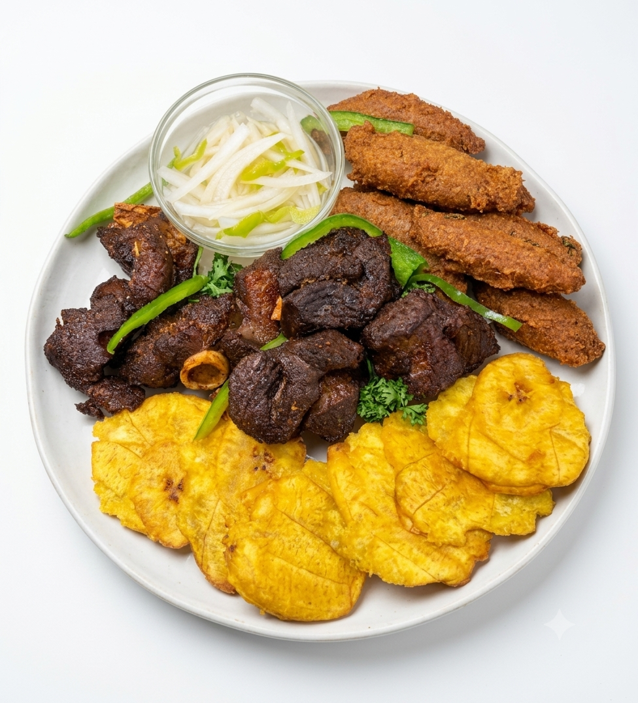
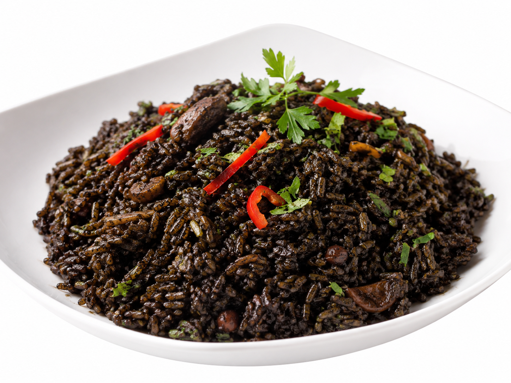
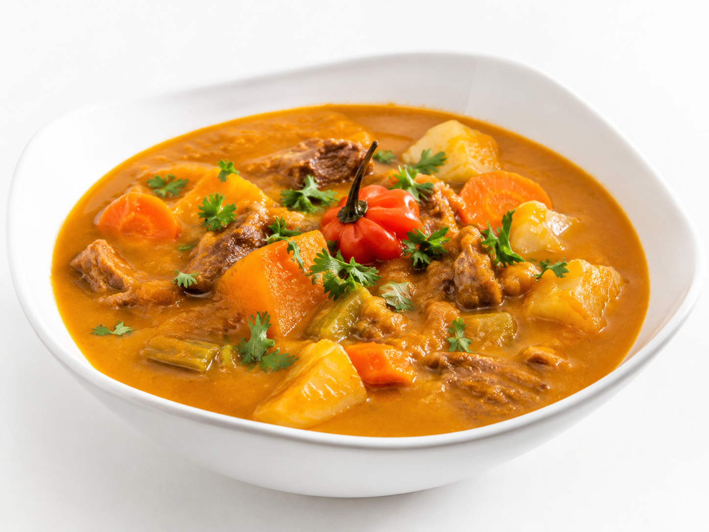

Nos incontournables
Les plats signature
Une sélection de nos plats les plus demandés, préparés chaque jour avec des produits frais.

Griot Traditionnel
Morceaux de porc tendres, marinés aux agrumes et aux épices pays, puis frits jusqu'à obtenir un croustillant parfait. Servi avec son pikliz croquant et des bananes pesées.

Diri Djon Djon
Un riz noir parfumé, traditionnellement cuisiné avec des champignons noirs des grands bois d'Haïti et des pois, symbole des grandes occasions et des repas de fête.

Tassot Cabri
Morceaux de cabri généreusement marinés, saisis et croustillants. Accompagnés d'une sauce bordeaux épicée faite maison et de légumes sautés du jour.

Soup Joumou
La soupe de giraumon emblématique de notre histoire et de l'indépendance. Un bouillon riche et réconfortant aux légumes, viandes tendres et pâtes traditionnelles.